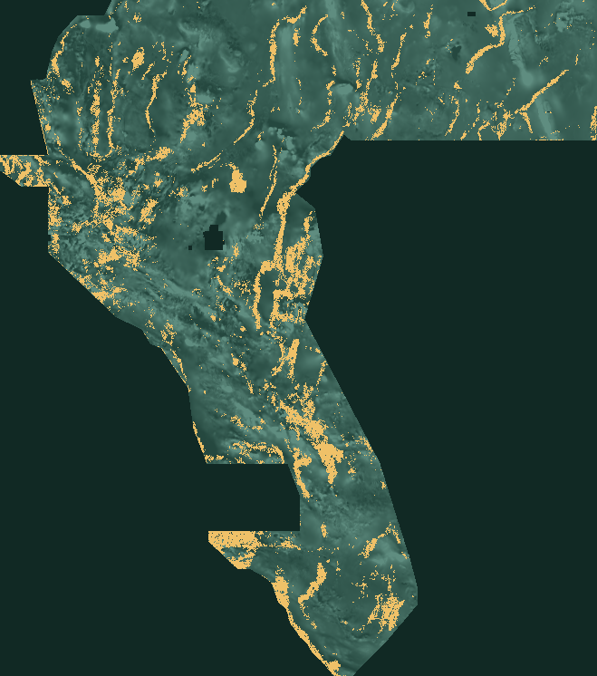

Topographic step × magnetic edge
Gradient magnitude divided by absolute Laplacian (step vs curvature) times magnetic edge strength. Highest stable MINE OOF (0.000125 nats) and +0.00807 DTI on 4/4 folds, CI>0.
A unique GeoTIFF built from measured geophysics—not copied predictions. Download the candidate, inspect its evidence, and protect the next submission slot.
VALIDATED · 4/4 FOLDS · CI>0All-finite · float32 · EPSG:32611 · 100m
NaN-outside alternative · Independent format receipt
Validated on spatial holdout · No leaderboard score yet · Unique vs 208 prior rasters

The D_topographic_step_proxy candidate (19 bands + D) scored 0.13952 against a fresh baseline of 0.13145 on spatially withheld known catalogue labels. All 4 folds improved. Bootstrap 95% interval for ΔDTI: +0.00109 to +0.01550 (excludes zero), so it passes the strict gate that hypothesis A failed.
| Spatial fold | 19-band baseline | 19 + D_topographic_step_proxy | ΔDTI |
|---|---|---|---|
| Quadrant 1 | 0.10865 | 0.10892 | +0.00027 |
| Quadrant 2 | 0.17413 | 0.18819 | +0.01406 |
| Quadrant 3 | 0.12454 | 0.13921 | +0.01467 |
| Quadrant 4 | 0.14881 | 0.16601 | +0.01720 |
Four quadrants · 1km training buffer · fixed sparse budget · 180+ spatial blocks · Full validation receipt (v2) · Previous A validation
Gradient magnitude divided by absolute Laplacian (step vs curvature) times magnetic edge strength. Highest stable MINE OOF (0.000125 nats) and +0.00807 DTI on 4/4 folds, CI>0.
Neural MINE with three seeds, spatial folds and null controls. F_transtensional_corridor highest full-fit MI but negative OOF; D and I most stable. Filter before spending slots.
Sparse coverage avoids paying FP mass for already-covered truth. H33 pruned 200m near catalogue (37,654 dots). New candidate uses 0.7% density, 3.0px separation, tip protection, and a validated topographic step feature — 71,947 pixels different vs H33.
gems38-D-step-3p0-07pct-tipProt-20261005-ecfbf59e2b48
G38 D-topo-step 19+D HGB120 0.7pct s3.0 tipProt 200mExcl; OOF+0.00807 4/4 CI>0; MINE D 0.000148 nats
SHA-256 · 8e0876bbe844ee118489993bc3fe67c3120181ffef9a0dc144c083fbb5a1f5cd
Pixels SHA-256 · ecfbf59e2b48… · 36171 positive cells
The previous generator used random fault lines and simulated “MT/ASTER” fields. Its holdout forced positive improvements. We replaced it with measured data, actual MINE screening on 5.17M rows, spatial validation, and a closed promotion gate. Withdrawal record.
Official leaderboard last observed: 0.3262 · 2026-10-05. Refresh status: research-tool snapshot. Source freshness and limitations.